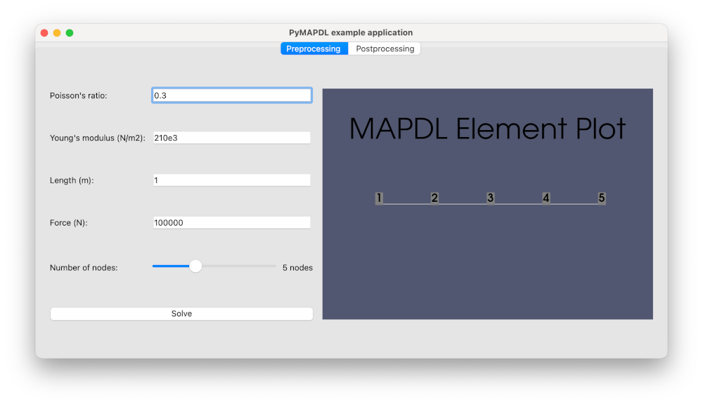
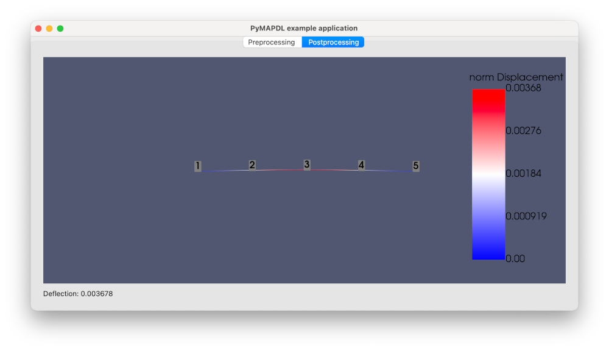

Create a GUI app in Python with PySide6#
This example shows how to create a graphical user interface (GUI) app in Python that uses PyMAPDL to compute the deflection of a square beam.
Application layout#
The gui_app.py script launches a graphical app using PySide6.
The Preprocessing tab contains input fields for Poisson’s ratio, Young modulus, beam length, and a number of simulation nodes.
The Postprocessing tab shows the deformation plot.
Add a PyVista plotting frame to the window#
Start by importing the QtInteractor
class from the pyvistaqt package and
the MapdlTheme
class from the ansys-mapdl-core package:
from pyvistaqt import QtInteractor
from ansys.mapdl.core import MapdlTheme
Then, add a plotter on the first tab:
def _setup_tab_preprocessing(self) -> None:
...
# PyVista frame in the window
self._preprocessing_plotter = QtInteractor(theme=MapdlTheme())
container_layout.addWidget(self._preprocessing_plotter, 0, 4, 6, 50)
Add another plotter on the second tab:
def _setup_tab_postprocessing(self) -> None:
...
self._postprocessing_plotter = QtInteractor(theme=MapdlTheme())
container_layout.addWidget(self._postprocessing_plotter)
The plotter can be updated with a PyMAPDL plotter object as follow:
# Getting PyMAPDL plotter object
nodal_disp_plotter = self._mapdl.post_processing.plot_nodal_displacement(
"norm", show_node_numbering=True, cpos="xy", return_plotter=True
)
# Updating widget
self._postprocessing_plotter.GetRenderWindow().AddRenderer(
nodal_disp_plotter.scene.renderer
)
Finally, make sure to correctly close the VTK widgets when closing the app:
def closeEvent(self, event) -> None:
self._preprocessing_plotter.close()
self._postprocessing_plotter.close()
event.accept() # let the window close
Launch an MAPDL instance in your window#
In this example, the MAPDL instance is launched outside the MainWindow object,
and it passed to it as an argument.
if __name__ == "__main__":
app = QApplication(sys.argv)
mapdl = launch_mapdl()
window = MainWindow(mapdl)
window.show()
sys.exit(app.exec())
The MainWindow object stores the Mapdl object internally:
class MainWindow(QMainWindow):
def __init__(self, mapdl: Mapdl, parent=None) -> None:
super().__init__(parent)
self._mapdl = mapdl
self._setup_ui()
Simulation setup#
The model is built in build_model method:
def build_model(self, poisson_ratio, young_modulus, nnodes, length, force):
self._mapdl.clear()
self._mapdl.verify()
self._mapdl.prep7()
self._mapdl.antype("STATIC")
# create element type
self._mapdl.et(1, "BEAM188")
# Create material
self._mapdl.mp("PRXY", 1, poisson_ratio)
self._mapdl.mp("EX", 1, young_modulus)
self._mapdl.sectype(1, "BEAM", "RECT")
self._mapdl.secdata("10", "10")
# Create the nodes
for node_num in range(1, nnodes + 1):
self._mapdl.n(node_num, (node_num - 1) * length / (nnodes - 1), 0, 0)
# Create the elements
for elem_num in range(1, nnodes):
self._mapdl.e(elem_num, elem_num + 1)
# Fix beam ends
self._mapdl.d(1, lab="ALL")
self._mapdl.d(nnodes, lab="ALL")
# Apply the force to the node in the middle
self._mapdl.f(nnodes // 2 + 1, lab="FY", value=force)
And solved in run_solver:
def run_solver(self) -> None:
# solve
self._mapdl.slashsolu()
self._mapdl.solve()
self._mapdl.finish()
# run postprocessing
self._mapdl.post1()
self._mapdl.graphics("power")
self._mapdl.eshape(1)
self._mapdl.rgb("index", 100, 100, 100, 0)
self._mapdl.rgb("index", 0, 0, 0, 15)
mapdl.upcoord(2)
nodal_disp_plotter = self._mapdl.post_processing.plot_nodal_displacement(
"norm", show_node_numbering=True, cpos="xy", return_plotter=True
)
self._postprocessing_plotter.GetRenderWindow().AddRenderer(
nodal_disp_plotter.scene.renderer
)
nnodes = len(mapdl.mesh.nodes)
mid_node_uy = mapdl.get_value(
entity="NODE", entnum=nnodes // 2 + 1, item1="u", it1num="y"
)
self._deflection_label.setText(f"Deflection: {mid_node_uy:.6f}")
Develop the logic#
Connect each button to a function that contains the logic:
def _setup_tab_preprocessing(self) -> None:
...
# Solve button
self._solve_button = QPushButton(text="Solve")
self._solve_button.clicked.connect(self.run_solver)
container_layout.addWidget(self._solve_button, 5, 0, 1, 3)
...
Run the app#
You can run the app as a normal python script:
$ python gui_app.py
Additional files#
The example files can be downloaded using this link:
gui_app.py: Complete Python script.requirements.txt: Python libraries requirements.